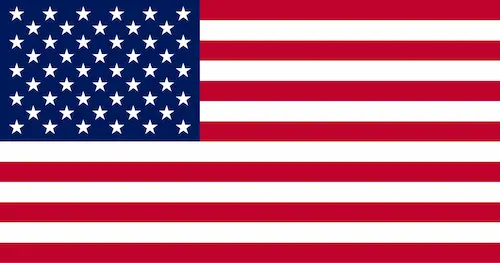

About Me
My name is Ty Sanders. I grew up moving around as a kid so there's lots of places I claim as home! I was born in Yuma, AZ Since then I've moved to California, Utah, Arizona, Virginia, Alaska, Idaho, Texas, Mexico, Washington, and now Georgia. I have a Bachelor of Science degree in Animal Science. I love working with animals, espcially in agriculture applications. I have four kids, so I am pursuing another degree in Software Development so I can work from home while taking care of them. Eventually, once they have gotten a little older, I would love to work for the USDA as an analyst, focusing specifically on livestock issues. Other careers I would find interesting would be a career as a criminal analyst for the federal government, cyber crime investigations, intelligence operations for the Navy, or R&D in livestock tracking, The best part about pursuing a degree in Software Development, having your kids young, and having an awesome husband is that it opens up so many avenues! I'm super grateful that our church provides BYU Pathway! What a blessing! We'll see where this path takes us, but I'm super excited to be here!
The United States of America

This is the flag of the United States. There are fifty stars on the United States flag, one for each state. The United States was born in 1776 when the Original Thirteen Colonies declared independence from the British Government. This day is celebrated on July 4th. 2026 markes the 250th year since America declared independence. If you look at the flag, you will see red and white stripes. Each stripe repre sents one of the original Thirteen Colonies. The largest state in the Union is Alaska. Rhode Island is the smallest state. The national anthem is "The Star-Spangled Banner." When "The Star-Spangled Banner" is played, Americans will rise, remove their hats, and put their right hand over their heart.